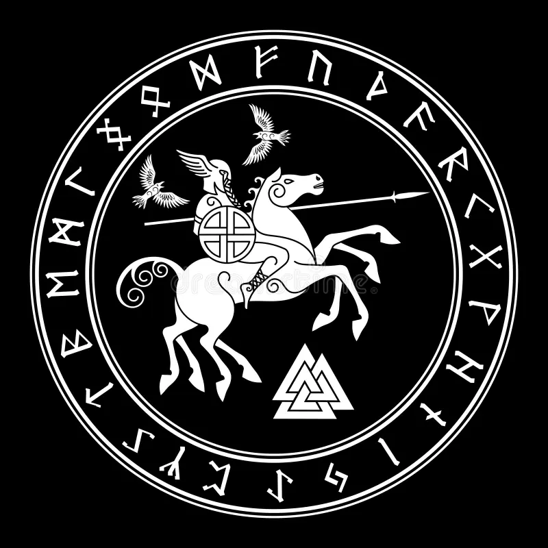

Sleipnir
Informações Básicas
Informações sobre a banda e repertório
Somos uma banda de metal focada no estilo músical dos anos 1970 a 2000, temos um vocalista, um guitarrista e um baixista. Nossa formação foi em 2022, enquanto ainda estávamos na sexta série do ensino fundamental II